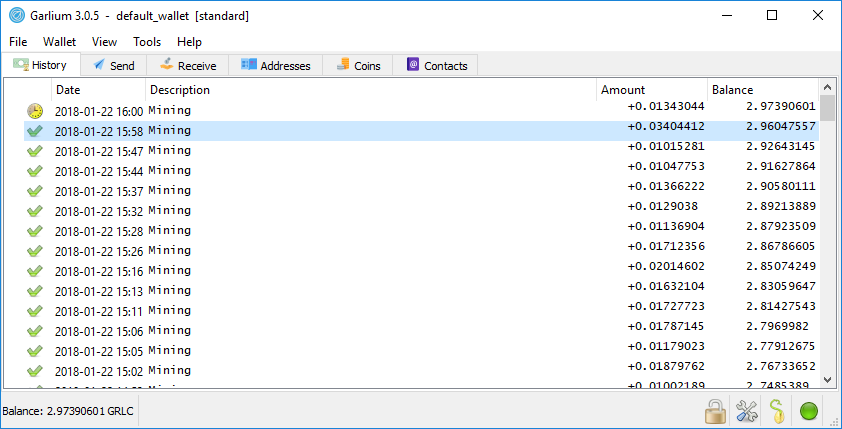

A lightweight Garlicoin desktop wallet
Garlium is a lightweight desktop wallet for Garlicoin, based on Electrum. By deterministically generating your wallet keys, you can save your wallet by writing a simple 12-word phrase down. You can load your wallet at any time by simply typing the 12-word phrase back in, on any computer, anywhere.
GNPQzRMXqrkZqBtsT9PkQZn3YrHVBhdhXR
sudo apt install python3 python3-pip git
sudo dnf install git
sudo pacman -S python python-pip git
git clone https://github.com/xSke/Garlium
cd Garlium
python3 setup.py install
python3 ./garlium
garlicoin-cli dumpprivkey <YOURADDRESS>. This will provide you with your address's private key. See above (regarding paper wallets) for instructions on how to import that private key into Garlium.
If you're having connection issues, perhaps connect to another server node. You can add a node by going to Tools -> Network -> Servers, unchecking "Select server automatically", and inserting the details in the two text boxes.
Here is a full list of known nodes:
| Server | Port | Owner |
|---|---|---|
| ske.wtf | 50004 | @Ske#6201 |
| 172.93.54.31 | 50002 | @DBN#1688 |
| 84.245.14.110 | 50002 | @Bonobo#8875 |
| mhamburger.net | 50002 | @mark3748#1645 |